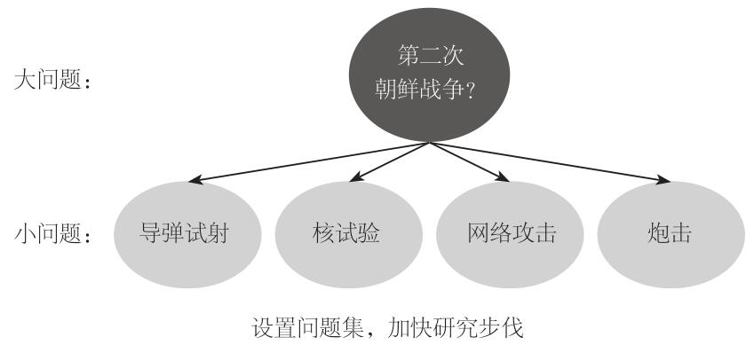

2013年春，我与硅谷未来学家、方案顾问保罗•萨福（Paul Saffo）进行了交流。朝鲜半岛正在酝酿一场新的令人不安的危机，因此，我向萨福简单描述了预测比赛后，提出了一个情报高级研究计划局曾经提过的问题：朝鲜会“在2013年1月7日至2013年9月1日之间尝试发射多级火箭吗？”萨福对这个问题不屑一顾。他说，五角大楼的几位上校也许对它感兴趣，但大多数人不会这么问。“更加根本性的问题是‘局势会怎样演变’”他说，“这个问题更具挑战性。”然后，他会说出一个长长的答案，轻松自如地谈论不同国家和不同领导人，参加过智库会议或者看过电视评论节目的人都会认为他的演讲是一次精彩的表演。可是，萨福的回答正确吗？即使到了现在，我也不确定。他所说的太过模糊，难以判断。这是“局势会怎样演变”这类重要的大问题的典型答案。
所以，我们面对的是一个两难选择。大问题的确重要，但它的答案无法评分。小问题不重要，可它的答案可以评分，因此情报高级研究计划局的比赛都是这类问题。你可能会说我们为了让自己具有科学的外衣而顽固计算那些不重要的事物。
这么说是不公平的。比赛提出的问题经过专家筛选，既有难度，又与情报分析师正在处理的问题有关联。但是，换一种说法就是公平的：比起我们都喜欢回答的那类大问题，如“局势会怎样演变”，比赛中的问题关注面更加狭窄。难道我们必须在无法评分的重要的大问题与可以评分的不那么重要的问题之间选择其一吗？无论选择哪一个，都不能令人满意。不过，有一种方法可以让我们摆脱这种两难选择。
保罗•萨福提出的“局势会怎样演变”这个问题中隐含着最近发生的使朝鲜半岛冲突加剧的事件。朝鲜违反联合国安理会的决议，发射一枚火箭，进行了一次核试验。它宣布放弃1953年与韩国签订的停战协定。它还对韩国发动了网络攻击，停止了两国政府间的热线联系，并威胁要对美国发动核攻击。这样看来，大问题显然可以分解成许多小问题。其中一个是“朝鲜会试射火箭吗”。如果它确实这么做了，冲突将会有所加剧。如果没有，局势会略有缓和。明确了小问题的答案，还不足以得出大问题的答案，但这样的确能给我们启发。如果我们提出了很多相关的小问题，最终就能得出大问题的答案。朝鲜会进行第二次核试验吗？它会拒绝关于其核计划的外交对话吗？它会炮击韩国吗？朝鲜军舰会向韩国军舰开火吗？就这样，答案逐渐浮出水面。肯定的回答越多，这个大问题的答案就越有可能是“结果非常不妙”。

我称之为“贝叶斯问题集”，因为它与第七章讨论的贝叶斯修正相似。还有一种考虑这个问题的方法，就是想象你是一位运用点彩画法的画家。这种画法是在画布上轻轻涂上小圆点，不再添加其他任何元素。每个小圆点都是独立的，但随着越来越多的圆点聚集在一起，图案就显现出来了。只要有足够多的圆点，画家可以创作出任何作品，无论是生动的肖像，还是视野开阔的风景画，都没有问题。
在情报高级研究计划局的比赛中也有问题集，但它们更多的是对事件结果的判断，而不是作为答题策略。在后面的研究中，我要提出新的概念，探索如何有效地通过小问题集来解答无法评分的“大问题”。
不过，莱昂•维泽尔蒂尔的批评还是不大可能得到释疑。其一，我将自己的研究计划称为精准预测项目，这似乎意味着准确的预测完全等同于好的判断。然而，这并非我的本意。洞察力只是好的判断的一个基本要素，还有其他，包括某些无法计算、无法在科学家的算法中体现出来的要素，例如道德判断。
好的判断的另一个关键要素是好的问题。确实如此，有远见的预测可以洞察出灾难或机会，但是，除非有人经过思考提出了正确的问题，否则这样的预测是不会出现的。什么是好的问题？会让我们思考那些值得思考的事物的问题。有一个界定好问题的方法，我称之为“拍脑门测试”：过一段时间后看到这个问题时，你会一拍脑门说，“哎呀，要是早一点想到这个问题就好了！”
下面是托马斯•弗里德曼于2002年9月提出的一个问题：“当我在思考布什总统准备推翻萨达姆•侯赛因政权并将伊拉克重建为民主国家的计划时，有一个问题让我百思不得其解，那就是，伊拉克今天这种状况，是萨达姆•侯赛因现在的统治方式所导致的吗？或者说，萨达姆•侯赛因之所以施行现在的统治，是因为伊拉克的状况所致吗？我的意思是，因为伊拉克实际上是阿拉伯的南斯拉夫，一个高度部落化的非自然形成的国家，所以它是一个被残暴的铁腕之徒所统治的集权制独裁国家……或者说，现在伊拉克已经融合为一个真正的民族国家？一旦萨达姆的铁腕统治被更加开明的领导者所取代，伊拉克受过良好教育的聪慧的人民将会逐渐把这个国家建设成为实行联邦制的民族国家。”16 弗里德曼的提问使我们注意到某些因素，现在我们知道它们是一系列后续事件的关键推动力，其中包括2003年美国入侵之后让伊拉克满目疮痍的野蛮的教派主义。因此，弗里德曼的问题通过了拍脑门测试。这尤其值得回味，因为他是美国入侵伊拉克的坚定支持者，部分原因很可能是他对局势如何演变的预期与实际情况相差甚远。
虽然我们可能认为超级预测家也是超级提问者，反之亦然，但事实上我们并不确定。事实上，我经过科学分析得出的最合理猜想是，实际情况通常并非如此。可以证明，理想的超级预测家的心理秘诀与理想的超级提问者大相径庭，正如超级问题的诞生似乎经常伴随着刺猬般的尖锐和信心，有了这种尖锐和信心，人们就能够从大理念出发理解一个事件背后的深层次推动力。这完全不同于狐狸式的折中主义和对不确定性的敏感，而不确定性正是超级预测的典型特征。
这意味着还有一种不同的方法来看待弗里德曼的分析。以弗里德曼2014年12月的一篇关于油价暴跌所带来的后果的专栏文章为例。“全世界上一次见证油价这样持续的暴跌是在1986~1999年，那一次危机对经济严重依赖石油的国家和依靠前者的慷慨解囊才得以发展的国家造成了深远的影响，”弗里德曼写道，“苏联帝国崩溃了；伊朗选出一位改革派总统；伊拉克入侵科威特；亚西尔•阿拉法特失去了苏联人和阿拉伯银行家的支持，只能承认以色列的存在。还有很多，我就不一一列举了。”弗里德曼就此得出结论，“如果今天油价下跌不是短期现象，我们也将看到许多意外结果”，特别是委内瑞拉、伊朗和俄罗斯这样的石油输出国，它们所受到的冲击尤甚。17
以上是弗里德曼对于可能在不确定的时间范围内出现的不确定的意外结果的粗略说明。这只是预测，不是特别有用。因为有这样的预测，所以有些人认为弗里德曼是一位特别成功、特别狡猾的评论员，懂得如何在不担风险的前提下表现出高瞻远瞩的风范。不过，我们可以淡化这篇专栏文章的预测性，更多地将它视为一次尝试，其目的在于引起预测者对某些值得思考的事物的注意。换句话说，它是问题，不是答案。
超级预测家是否可以胜过弗里德曼，这个问题没有答案，而且就我们目前的目标而言，它与主题无关。超级预测家和超级提问者必须相互承认对方的互补作用，不要一味强调对方所谓的弱点。弗里德曼提出了挑战性问题，超级预测家应该用它们来提高自己的预测能力；而超级预测家给出了与实际情况高度吻合的答案，超级提问者应该用它们来微调自己对现实的认知模型，甚至偶尔还需要全面调整。本书开头提出的“托马斯对阵比尔”的架构是我们最后的错误的二元对立。现在我们需要建立托马斯与比尔的合作关系。
这是一个艰巨的任务。不过，现在倒是有一个规模大得多的合作机会，我乐见其成。它将是我的研究计划的圣杯：通过预测比赛来消除政策辩论中不必要的两极化现象，整体提升我们的智慧。